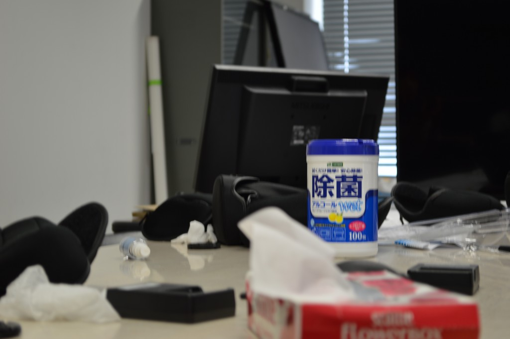
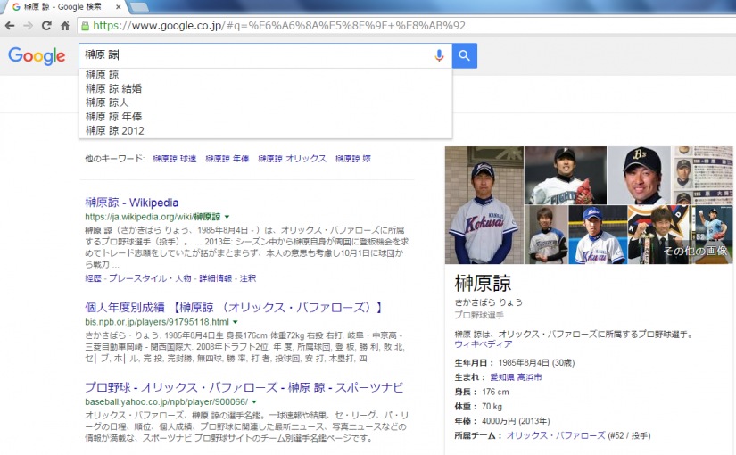
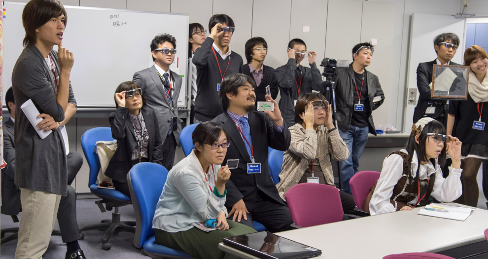
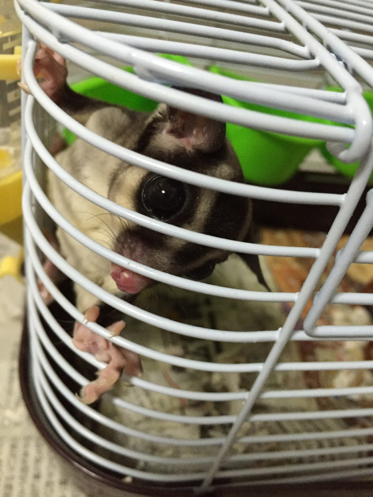
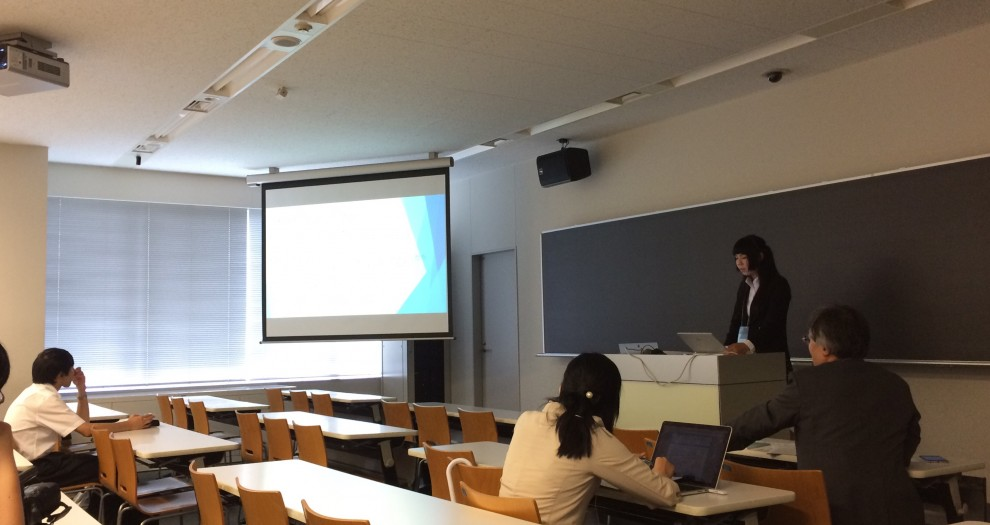
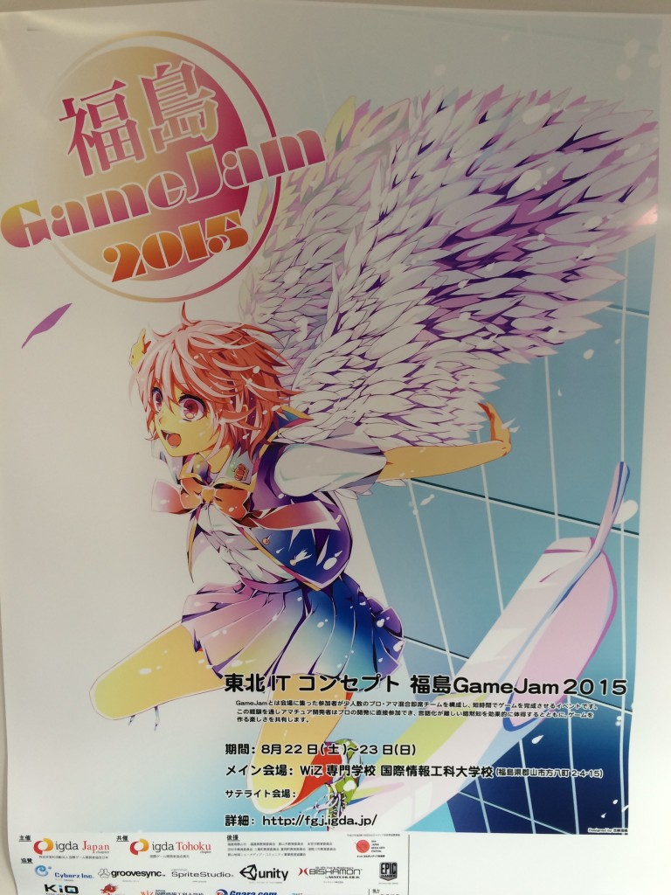

News
-
sakakibara wrote a new post, 第3回で学んだこと 1323101／一眼レフを使ってみよう, on the site 白井研セミナー 4年 7か月前
こんにちは、学籍番号1323101 の 榊原 諒 です。
今回は一眼レフの使い方を学んで実際に写真 […] 
-
hisataka wrote a new post, [DCEXPO2015]多重化インタラクティブデジタルサイネージを展示しました, on the site 絶賛、研究日和 4年 7か月前
2015/10/22-25で日本科学未来館にて行われた，DCEXPO2015のLavalVirtualブースで展示をしました.
ブースがLavalVirtualのブースで，展示の内容も絡めていくために思いついたのが，多重化インタラクティブデジタルサイネージです.
多重化技術を使って，LavalVirtualのプロモーション映像を誰もが見えるチャンネル(裸眼チャンネル)に表示し，フィルターを通して見えるチャ […]

-
柏木 諒 wrote a new post, 第2回1223076柏木 諒／エゴサーチとは？, on the site 白井研セミナー 4年 7か月前
こんにちは、柏木 諒です。
今回はエゴサー […]

-
山口 裕捺 wrote a new post, 第2回で学んだこと 1323040 山口裕捺, on the site 白井研セミナー 4年 7か月前
こんにちは。
私が第2回のセミナーにて学んだことは、エゴサーチについて、Dropboxとはなにか、無線LANセキュリティについてです。エゴサーチをすると、ネットから見た自分の人格や印象などが得られるということで、実際に自分の名前でかけてみました。
と、簡単に出てきてしまったことに驚きました。
確かになかなか居ない漢字なので、簡単に出たことにも納得です。何が載っているのか詳しく見てみると、セミナー […]

-
sakakibara wrote a new post, 第2回で学んだこと 1323101／エゴサーチをしよう, on the site 白井研セミナー 4年 7か月前
こんにちは、学籍番号1323101 榊原 諒です。
第2回の授業では、エゴサーチを […] 
-
shirai wrote a new post, DCEXPO2015日本科学未来館で新作を公開(10/22～25), on the site Shirai Lab 4年 8か月前
2015年10月22～25日に日本科学未来館で開催される「デジタルコンテンツエキスポ」(DCEXPO2015)・フランス Laval Virtualブース(C04)にて白井研究室から「新作」を公開予定です。
現時点で公開できる情報はこちらに掲載していきたいと思います。
・Ma […]  -
柏木 諒 wrote a new post, 自己紹介1223076柏木 諒／ゲームの裏側でプログラミングしたい, on the site 白井研セミナー 4年 8か月前
・自己紹介
氏名:柏木 諒(かしわぎ りょう)
※Ryoとか呼びやすい愛称でも呼んで頂いて大丈夫です。
好きな事:おいしい物を食べる事、買い物に行く事、友人とゲームをする・映画を見に行く等が好きです。
やりたい事:主にはゲームの裏側でプログラミングするような事をやってみたいと考えております。
しかし…それだけではなく、ゲームに関連するようなグラフィックやアニメーション等デザイン系統にも興 […]

-
sakakibara wrote a new post, 自己紹介 1323101 榊原諒／軽音学部、パートはベースです。, on the site 白井研セミナー 4年 8か月前
こんにちは
学籍番号 1323101 の 榊原 諒です。 Facebookページは こちら私は、軽音学部に所属しており、パートはベースです。現在は文化祭に向 […]

-
山口 裕捺 wrote a new post, 自己紹介 1323040 山口裕捺／プロジェクションマッピングについて勉強したい, on the site 白井研セミナー 4年 8か月前
こんにちは、
1323040 山口裕捺です。 […]  -
kai wrote a new post, 今週振り返って…, on the site Kai's Develope Diary 4年 8か月前
今週は、ARの本とTOEICの勉強をやる計画を立ててました。
しかし、次の日の授業の課題やらバンド練習やらで思っているより上手くいっていない・・・
今も、明日のReadingの勉強を必死になってやってる始末。
一日のスケジュールをはっきりさせて時間管理すべきだと改めて感じました。
明日からは、ARの事も書けるように心がけて行きたいです。
-
shirai wrote a new post, 講演お知らせ「非ゲーム分野でのゲームエンジンの活用」, on the site Shirai Lab 4年 8か月前
白井先生が多重化技術について、画像電子学会（IIEEJ）の一般向けセミナーで講演します。
第４回 画像エンタテイメント(IET)セミナー「非ゲーム分野でのゲームエンジンの活用」
PDF: http://fb.me/7ETfTmrqO
申し込みURL：（以 […]

-
kai wrote a new post, TOEIC!!, on the site Kai's Develope Diary 4年 8か月前
最近、TOEICの勉強を大学に提供してもらったe-Learningシステムで勉強しています。
TOEICのパートごとに絞った勉強ができるからとても使いやすい！
まあ、問題を解くと知らない単語が出てきて焦るし、時間制限もあるからなおさら。
試験もあと１週間ちょいだからできるだけ多く問題を解いて本番に備えたいですね。
-
shirai wrote a new post, エンタテイメントコンピューティング2015で5件の研究発表, on the site Shirai Lab 4年 8か月前
「エンタテインメントコンピューティング2015」（主催：情報処理学会 エンタテインメントコンピューティング研究会(SIG-EC)）にて以下の発表を行いました。
会期: 2015/9/2 […]

-
kai wrote a new post, はじめまして, on the site Kai's Develope Diary 4年 8か月前
今日からブログをはじめました！
このブログには、主に自分の日々の勉強について書いていきたいなと思ってます。
最初に言っておきますが、自分は文章書くのが下手です。
まあ、このブログで文章力を鍛えて行けたらなとも思います。
ということで、気が向いたら是非読んでください！ -
shirai wrote a new post, 2015年度 白井研究室 卒業研究 中間発表会開催, on the site Shirai Lab 4年 9か月前
主に学内、特に情報メディア学科3年生向けのお知らせです。
2015年9月18日 […]  -
Ryotaro Tsuda wrote a new post, 学会で2件の研究発表を行います！, on the site 汗を流して飯が旨い 4年 9か月前
こんばんは 津田です．
制作活動に励む傍ら，実はせっせと研究室で研究活動と論文の執筆を行っていました．
学部4年生という身分では有りますが，所属している研究室でチャレンジできる環境を用意していただき，学会に2本論文を投稿する事が出来ました．
初めての研究，初めての論文執筆ということで最初は日本語の使い方を復習するところから始まりましたが，周りの方々の協力もあって無事書き終えることが出来ました．支えてくれた方々に感[…]
-
shirai wrote a new post, 第20回 日本VR学会大会にて5件の研究発表, on the site Shirai Lab 4年 9か月前
2015年9月9〜11日に芝浦工業大学にて開催される第20回日本バーチャルリアリティ学会大会にて以下の5件の発表を予定しております。
発表予定のタイトル：
超人スポーツのためのボクシングトレーニングツールの開発
○岡本 遼, 松澤 孟, 白井 暁彦(神奈川工科大学)
9/9 11:15-12:45 12D アート&エンタテインメント1 座長:渡邊 淳司 […]
-
Ryotaro Tsuda wrote a new post, FGJ2015@TUTに参加してきた, on the site 汗を流して飯が旨い 4年 9か月前
8/22-23に東京工科大学で行われた福島ゲームジャム2015に今年も参加してきた。
5回目のゲームジャムだったが今回は色々と変則的なことが起き、
自分自身、いつもと違う体験ができたので忘れないうちにそれを報告しようと思う。1) 福島Game Jam VR Challege
今回私のチームは「福島Game Jam VR Challege」チームということで
ゲーム作品開発ではなく、VRシステムの開発がミッ […]  -
Ryotaro Tsuda wrote a new post, VSCode 0.7.0での変更点と新機能User SnippetsでUnityのスニペットを有効にする, on the site 汗を流して飯が旨い 4年 10か月前
こんばんは
最近VSCodeにお熱の津田です。先日のアップデートでVSCodeのバージョンが0.5.0→0.7.0となり、
かなり大きな仕様の変更がありました。今回のエントリでは
・0.7.0で痛VSCode化
・User Snippetsを利用したUnityのスニペットについて共有します。
0.7.0では内部のフォルダ構成に大きな変更があったようです。
今まで痛VSCode化して […]
-
Ryotaro Tsuda wrote a new post, Unity×VisualStudioCodeで煩わしい.metaファイルをエクスプローラーに表示させないようにする, on the site 汗を流して飯が旨い 4年 10か月前
こんばんは。
UnityでVisualStudioCodeを使っていたら
エクスプローラーにmetaファイルも出てきて煩わしかったので消してみました。TumblingDice 【VSCode】Visual Studio Code0.5.0の新機能まとめを参考にさせていただきました
調べてみると何やらsetting.jsonからいじることが出来そうな予感
command + shift + […]

- もっと読み込む